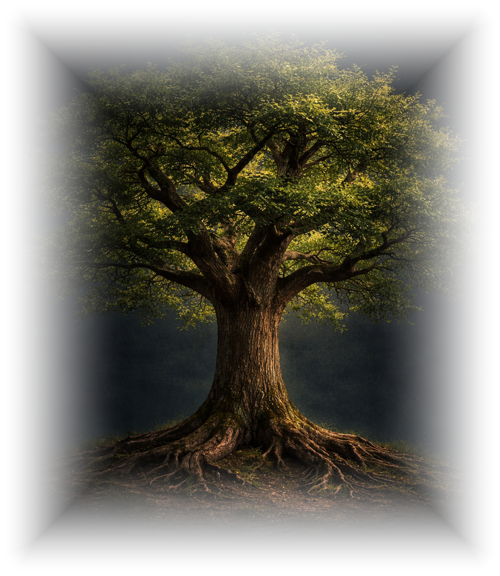

The Oak

The Oak is how Medraf Digital designs, builds and explains its work. If you can read the tree, you can understand your system, and nobody needs to learn a word of jargon to do it.
Because most explanations of AI are written for people who build it, not for people who run businesses. An oak needs no translating. Everyone knows that leaves depend on branches, branches on the trunk, and all of it on what happens below the surface. And an oak is the right tree. Strong, steady and built to last, which is how a system for your firm should be.
Every Front Office Audit ends with two Oaks drawn for your firm. One shows how your front office currently works, with people holding the branches. The other shows how it could work in the future.
About the auditA first chat, fifteen minutes. We talk about how your business runs, where the time goes, and whether any of this would genuinely help. If it would, I will tell you what working together looks like. Pricing is discussed on the call.
Book a call